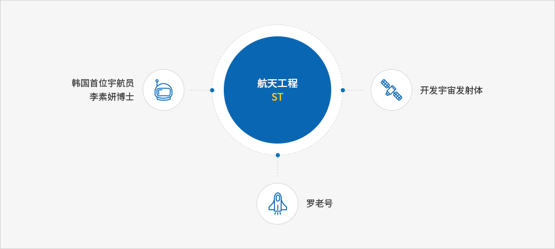

航空航天产业
- Home
- 主要产业
- 航空航天产业
航空航天产业
由于位于大田的航空航天研究院、大韩航空技术院、韩华大田事业单位、韩国科学技术院人工卫星中心在2013年成功发射罗老号运载火箭，据此大田发展成为引领韩国航空航天产业发展的城市。并且此机构边加强研发、政策研究、国际合作，边推进智能无人驾驶飞机技术开发项目、平流层卫星体系开发、卫星系统开发、机器人引擎开发、导航控制研究等。
2013年韩国第一红外线宇宙观测卫星，科技卫星3号(STSAT-3)成功与大田国科学技术院人造卫星中心交换信号。
航天工程(ST)
大德通过开发先进飞机、人造卫星、航空运载器等，以逐步实现韩国成为航天开发国家的梦想。 韩国的航空航天技术从为开发航天运载器试验发射科学火箭KSR-Ⅲ、开发智能无人驾驶飞机及实用人造卫星(阿里郎2号)到韩国首次培养宇航员，韩国航天航空技术实现飞跃发展。
